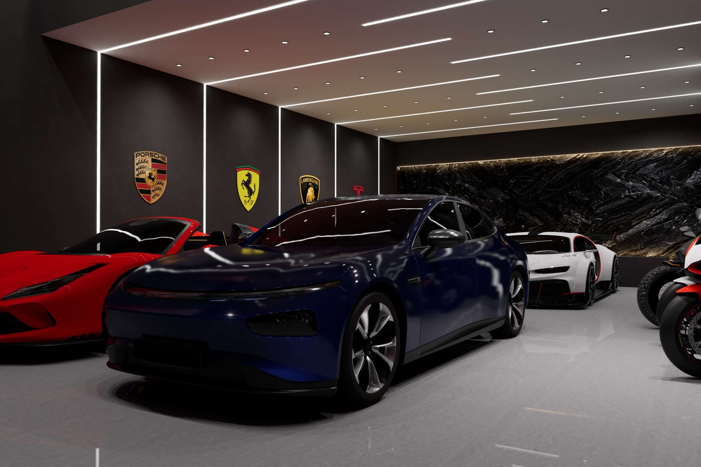
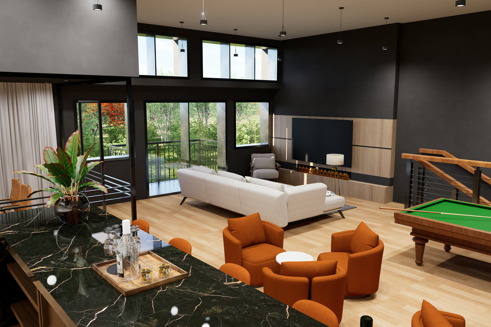
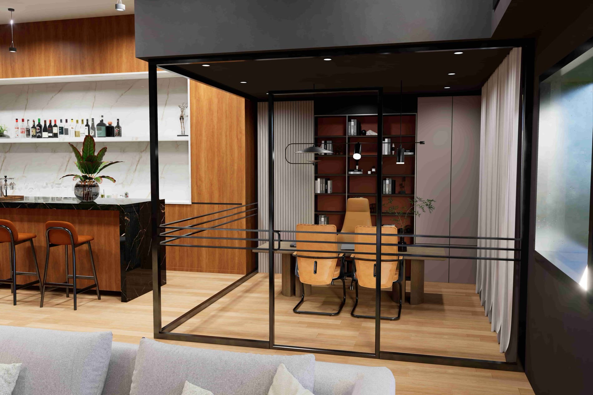
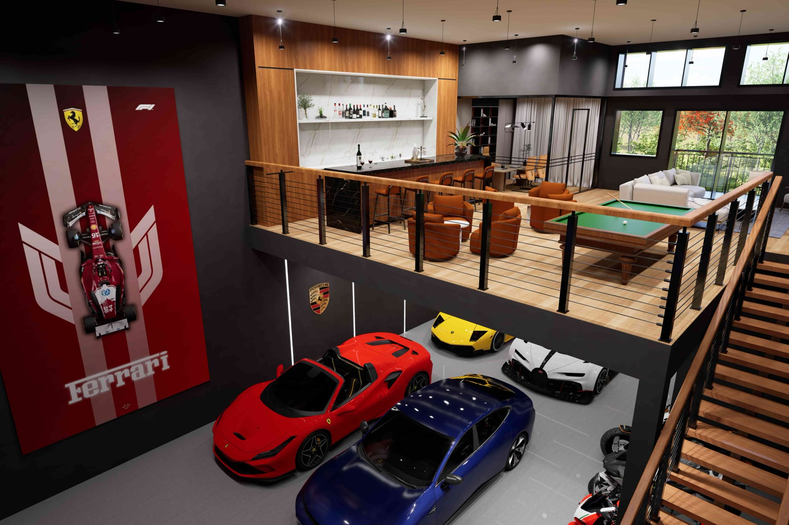
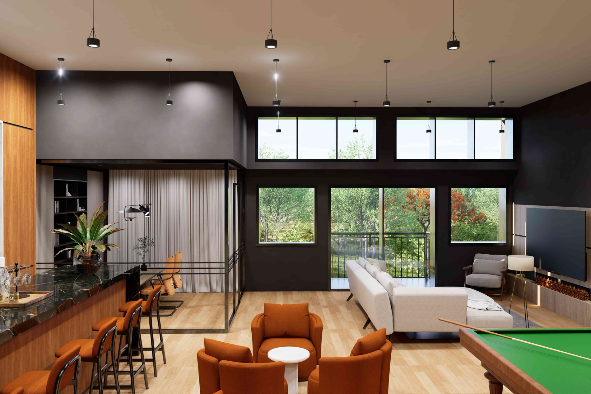

Lake Zurich, Illinois
Eleven buildings. 121 private rooms. One gate.
Luxe Corsa Auto Suites — climate-controlled, drive-in suites on fifteen secured acres in Lake Zurich.


Lake Zurich, Illinois
Luxe Corsa Auto Suites — climate-controlled, drive-in suites on fifteen secured acres in Lake Zurich.
The campus
Eleven suite buildings, a members-only clubhouse and an on-site dealership, all inside one secured perimeter with dedicated personnel and 24/7 surveillance.
The tiers
Thirty-foot Premium bays anchor the ends of every row; twenty-three-foot Standard bays fill the runs between them. Both arrive with a mezzanine, a drive-in door and 100 AMP service.
Availability
Forty-six suites are spoken for. The live plan shows which buildings still have bays, and which tier they belong to.
Plates
Five plates · scroll to pan




Two footprints
Both types are delivered as a finished shell with a mezzanine, 100 AMP service and a drive-in door. What happens inside is the owner’s.

Premium · 26 released
Starting at$699,000

Standard · 95 released
Starting at$549,000
Where they sit
The massing study needs WebGL, which this browser has turned off. The full site plan is on the availability page.
Extruded from the site plan — footprints, bay widths and the Premium / Standard split are to scale; heights are indicative, because the plan carries no elevation. Drag to orbit, or use the arrow keys.
See every bay on the planOwnership includes
Dedicated personnel and premium security for complete peace of mind.
Advanced monitoring systems protecting your investment 24/7.
Professional-grade simulators for the ultimate entertainment experience.
Modern gym, spa, and recovery suites nurture health and performance.
Flexible boardrooms and lounge areas elevate meetings, launches, and celebrations.
Onsite artisans offer bespoke detailing, upgrades, and personalized suite finishes.

Exclusive opportunity

First 50 eligible purchases automatically entered. Void where prohibited by law. Open to residents 18 or older. Prize: trip to the 2026 Monaco Grand Prix; approximate retail value $100,000. Odds of winning depend on eligible entries. See official rules for details.
Member stories
“The suite gives my collection room to grow—plus, the climate control means less time worrying about preservation.”
“The clubhouse energy and 24/7 access mean spontaneous night drives start and finish at my own doors—no compromises.”
“I locked in early because the location and security are unmatched.”
Get started
Tell us what you drive and how much room it needs. An advisor calls back within one business day.